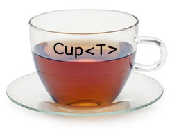
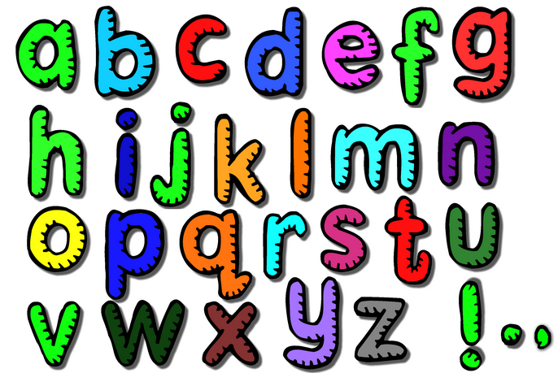
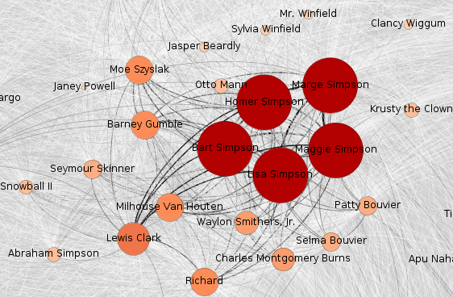
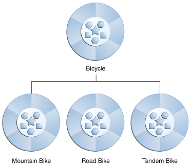

Overview

Brief overview of course content with an introduction to BlueJ (IDE) and a preliminary discussion of classes and objects.
Classes and objects
We continue exploration of classes and objects and introduce methods, parameters data types and access modifiers.
Understanding class definitions

In this presentation we continue exploring elements of classes and the Java language including how source code is written and presented.
Ticket machine

We examine some of the components of the ticket machine program. We look at some further elements of the Java language such as local variables and scope. We also introduce conditional statements, which offer choices between different actions as the program executes.
Abstraction & modularization
Abstraction means ignoring details for the moment and concentrating on the problem at a higher level. Modularization comprises subdividing the problem into manageable parts each of which interacts in well-defined ways into the overall project.
Abstraction & modularization

Here we use the BlueJ clock to demonstate use of modularization. We develop a NumberDisplay class and adapt it for dual use, both to display hours and minutes.
Collections classes and control flow

We now introduce collection classes and control flow techniques to traverse such collections. Specifically we examine the ArrayList class and how to use the class to manage and manipulate data.ArrayList objects may store user-specified data types which are designated as parameters when the ArrayList variable is declared. ArrayList is an example of what is referred to as a generic class.
String class and primitive char type

We explore the relationship between the String class and the Java primitive type char and observe that a String object is equivalent to an array of chars.
More sophisticated behaviour
We discuss the application programming interface (API) of a class. We examine how random data may be generated. We revisit collections and examine the HashMap and HashSet generic classes. We introduce a range of topics that includes two-dimensional arrays of primitive types, anonymous objects, chaining and control flow using the switch, break and continue statements.
Working with characters

We obtain further practice in character manipulation by developing and exploring simple ciphers such as Caesar and Vigenere.
Testing
Exhaustive testing of software is not feasible because the number of such tests is so great as to be impossible to perform within a reasonable time. What is possible, however, is the progressive construction of a suite of unit tests as the project progresses accompanied by test harness that allows this suite to be exercised on a regular basis and whenever changes take place to the code base or additional tests are added.
Algorithmic complexity
We discuss algorithmic complexity and how it is measured. We examine the performance differences between linear and binary search methods. Some indicative running times for different sort algorithms are presented to highlight the importance of choosing the correct implementation of a particular algorithm in the course of development.
Spacebook

We examine the rules that apply to designing a class and apply those rules to develop an application named Spacebook. Concepts such as cohesion and coupling in the relationship between classes are briefly discussed. We explain the approach that is adopted in the labs to develop the application as a series of iterations and examine the content of each iteration.
Program style
Code without style may compile, run and indeed produce correct results. But code written without complying with a community-agreed style proves not only difficult to write but even more difficult to maintain. Here we present an initial approach to styling code based mostly on the rules laid out in the Google Java Style document.
Java Interface Type

In this presentation we show how to use the Java interface type to unify common behaviour. In doing so we are demonstrating a concept known as polymorphism, a pattern in object oriented programming in which classes have different functionality while sharing a common interface.We have already gained experience in using sorting algorithms but found it necessary to rewrite the algorithm when we wished to sort a new type. We show how, by using interfaces, we may write such an algoritm only once yet use it to sort a variety of types of our choosing.
Inheritance

A class may inherit from another class and in doing so gain access to much of its behaviour and data. The inherited or derived class, in addition to having access to its parent, may specialize by adding its own methods and data or customizing selected methods of its parent.
Exceptions
An exception is a disruptive event that may occur during the execution of a program and if not anticipated and dealt with may result in the program producing incorrect results or crashing. Here we briefly discuss techniques to use exceptions to indicate the occurrence of errors during program execution and demonstrate how to catch or handle such exceptions.